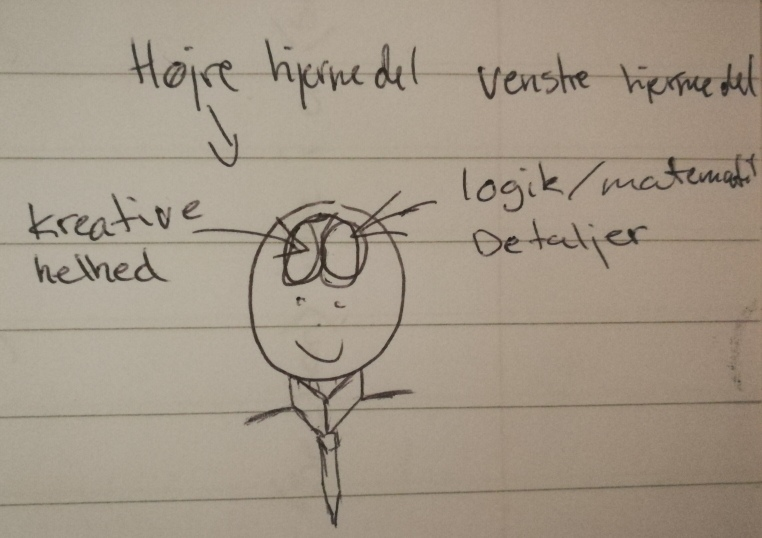

Når det kommer til hjernen, skulle højre hjernehalvdel være den kreative del af hjernen.
Hvor imod at den venstre side skulle være menneskets logiske hjernehalvdel.
Det viser sig dog at hjernen ikke er delt op på den måde i virkeligheden.

Divergent og konvergent er 3 forskellige måder at tænke på.
Divergent er den kreative del, som finder på en masse forskellige løsninger på problemet.
Konvergent er den logiske del, som indsnævre løsningerne og finder frem til den korekte løsning til problemet.